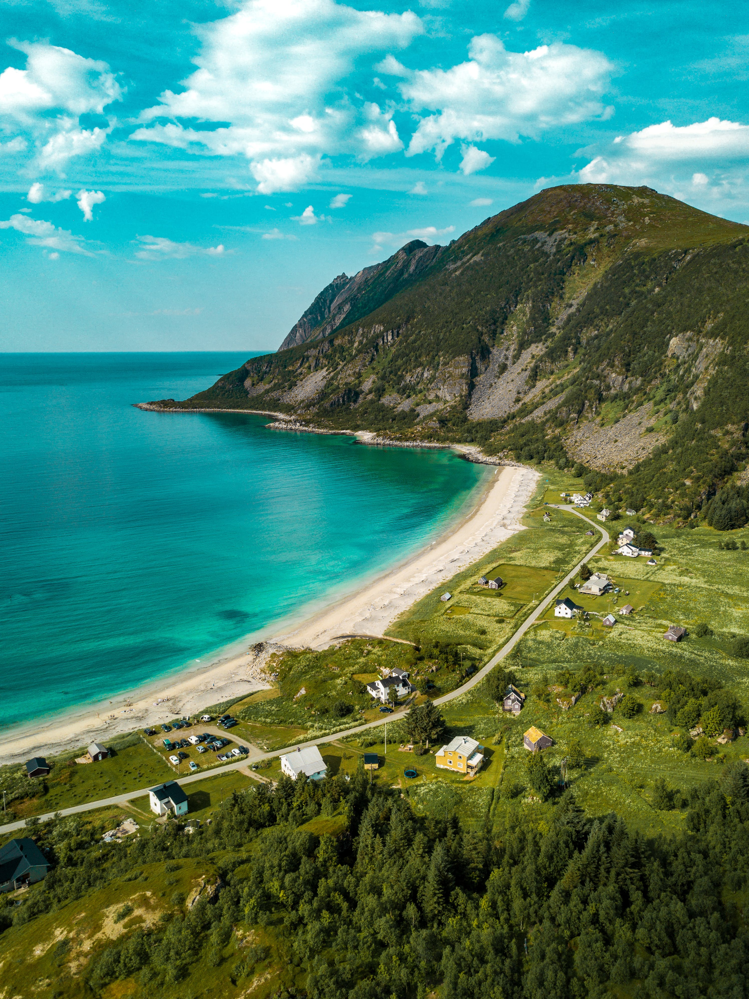

Most people visit Taniti to enjoy the beaches, explore the rainforest, and to visit the volcano. However, there are other things to do, including visiting a local history museum, going on chartered fishing tours, snorkeling, zip-lining in the rainforest, visiting several pubs, including a microbrewery, dancing at a new dance club, seeing a movie, taking helicopter rides, playing at an arcade, visiting art galleries, and bowling. Also, a nine-hole golf course should be operational by next year. Many of these activities are located in Merriton Landing, which is a rapidly developing area on the north side of Yellow Leaf Bay.
Most tourists spend most of their time in Taniti City, which boasts native architecture and nearby white, sandy beaches that encircle Yellow Leaf Bay. Other popular activities include boat or bus tours of the island, hikes in the rainforest, or visits to Taniti’s active volcano.
